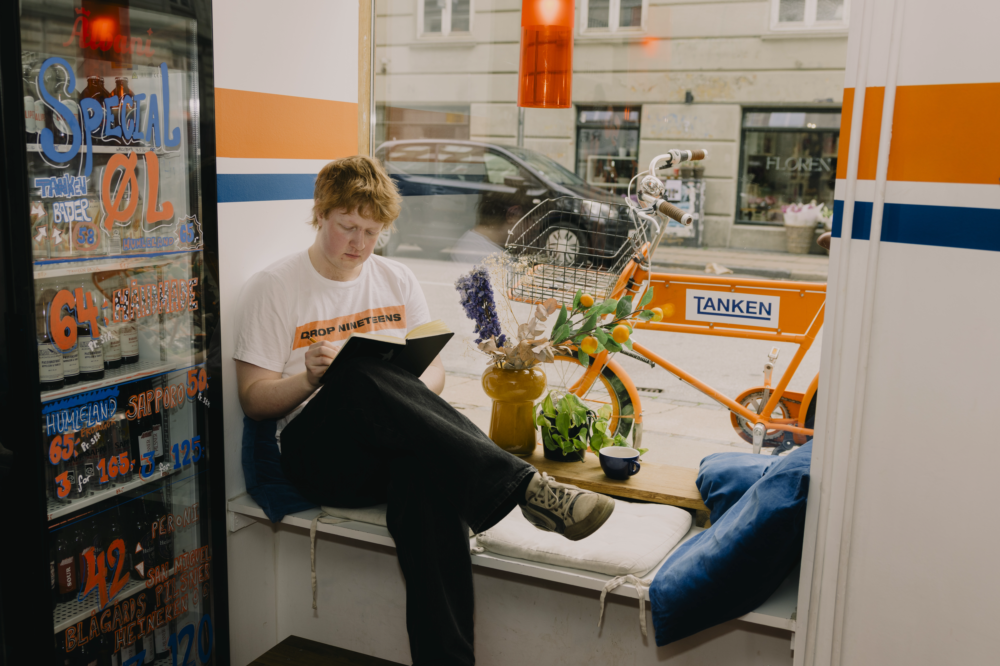
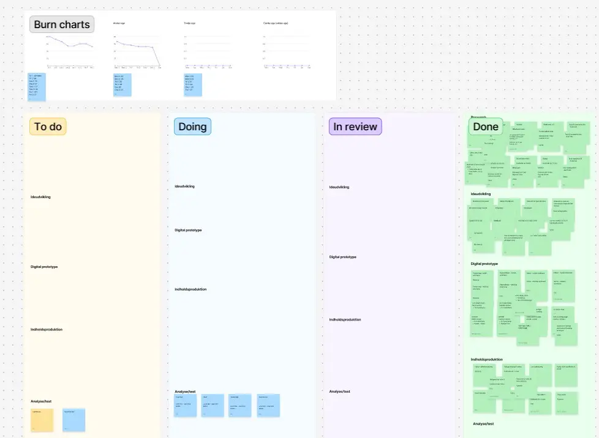
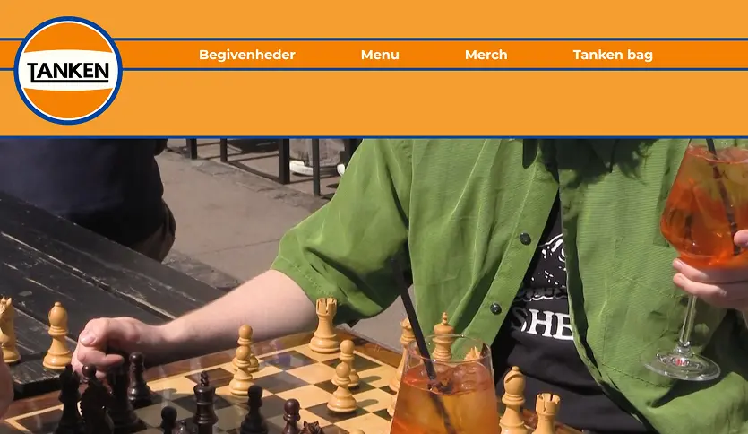
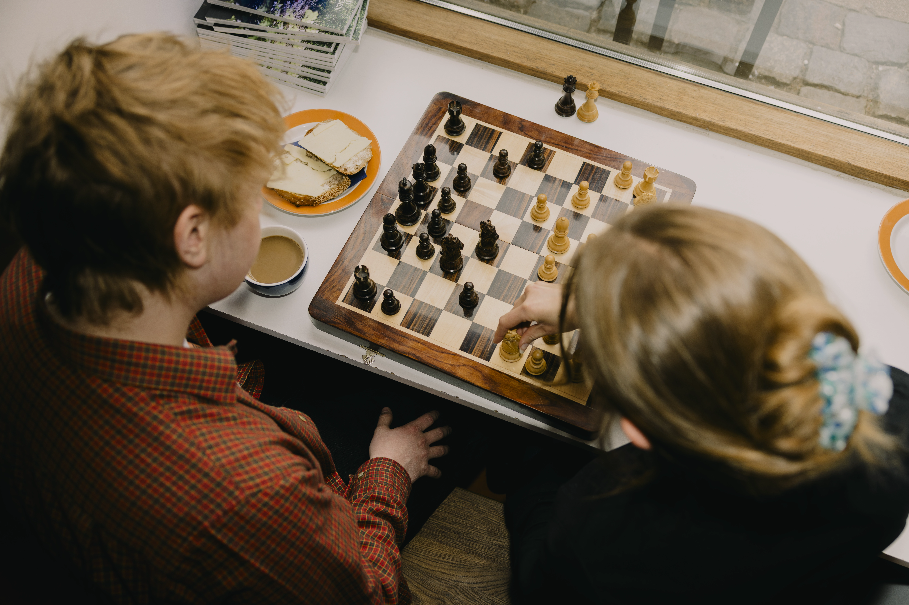

Tema 5
Grundlæggende indhold
Temaet
I dette tema skulle vi for første gang arbejde med et stort site designet til en specifik virksomhed af vores valg i større grupper. Jeg arbejdede med en bar/cafe som hedder tanken, det gjorde jeg i en gruppe på 5 mennesker.


Formålet
Dette tema skulle give os en grundlæggende forståelse og indførsel af indholdsproduktion, herunder præproduktion, selve produktione og postproduktion.
Derudover er dette tema kulminationen af de forrige temaer da vi skal bruge alle de ting vi har lært indtil videre samtidigt med at være i større gruppe konstelationer.

Proces
I dette tema var det vigtigt at alle i gruppen var enige om hvordan vi arbejde, så vi startede derfor ud med et møde om forventinger og snak om hvordan vi hver især arbejder bedst.
Vi blev introduceret til scrum boards og fik gået igang med vores.
vi endte hurtigt på en virksomhed da en fra vores gruppe perifært kendte dem der ejer bar/cafeen “tanken” som meget heldigt ligger lige bar ved EK. Vi gik derned og snakkede med ejeren og begyndte de næste par uger på moodboard og alt hvad der hører til startup processen af et større site.
vi lavede et fælles moodboard og blev enige om stilen. vi lavede wireframe, hi-fi wireframe og en prototype som vi fik testet på. vi fandt ud af hvad der duede og ikke duede og begyndte på kodning af site.
det var der en del problemer med da vi ikke helt kunne gå Git og github til at fungere ordenligt. Vi nåede kun lige at få en fungerende site op på benene før vi skulle præsentere og vi nåede derfor ikke super mange tests på det færdige site og vi nåede heller ikke at rette op på fejl.
Løsning
Vi fik lavet et færdigt site der repræsenterede tanken og deres ambitioner efter interview og flere samtaler med ejeren. samt gav det en mere præcis identitet


Læring og reflektion
Jeg lærte en del i dette projekt dog allermest om gruppe arbejde og det at organisere det, jeg har allerede tidligere arbejdet med indholds produktion men det var godt lige at skulle lave til et firma.